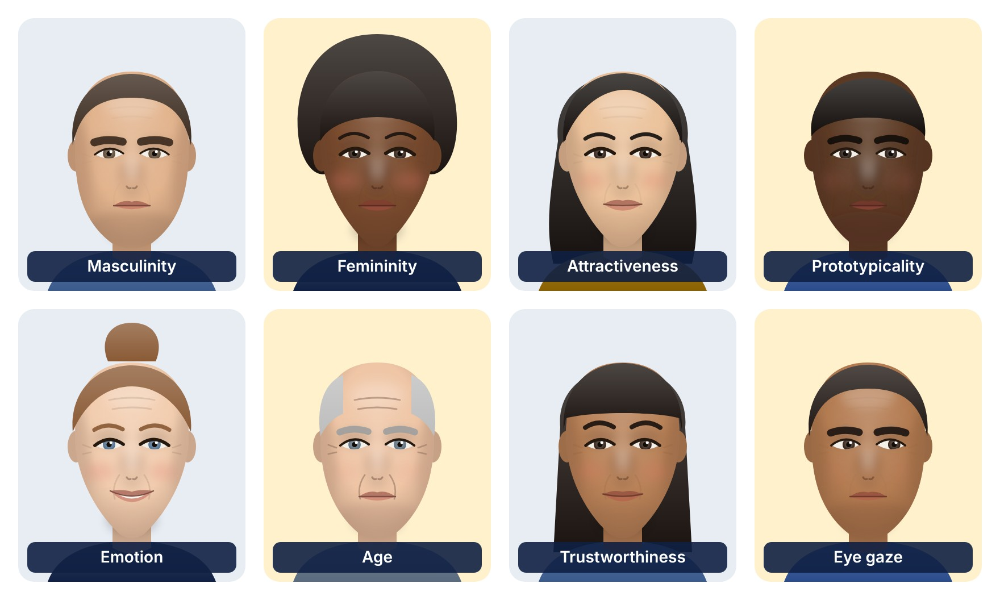

Mind perception and humanization
How people decode complex emotions from faces, and how that links to seeing others as fully human.
Director: Brittany S. Cassidy, Ph.D.
People form enduring impressions from glimpses of faces. Our lab studies how facial cues and stereotypes influence those impressions, and how biased impressions contribute to longstanding societal inequities.

Impressions are biased by facial characteristics (e.g., “a person with an attractive face is good”) and categorical stereotypes (e.g., “a Black face is less trustworthy than a White face”). Characterizing how facial cues drive impressions is important to understand these inequities as well as a core aspect of social cognition.
Our research treats person perception as a complex and dynamic process. We take a multi-level approach, combining multiple methods and populations to provide converging evidence for the mechanisms underlying how people evaluate, understand, and remember other people.
How people decode complex emotions from faces, and how that links to seeing others as fully human.
How gendered expectations about faces affect judgments of leadership, and what person perception reveals about anti-transgender bias.
How partisan cues change first impressions of faces and decisions about whom to trust.
Comparing younger and older adults to understand motivation in person perception.
Prospective students
Undergraduates can apply to join as research assistants.
September 2026
Maya Rao, Adrienne Brummett, and Bianca Gregory gave stellar presentations at the department's Graduate Research Colloquium.
August 2026
The lab's grad students, director, and a future psy-entist welcomed the academic year.
April 2026
Sloane Freeman successfully defended her MA thesis.